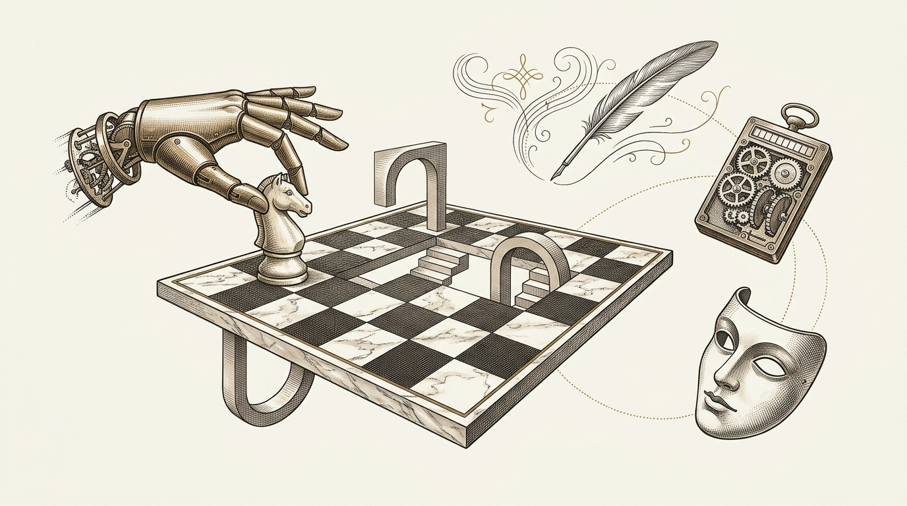
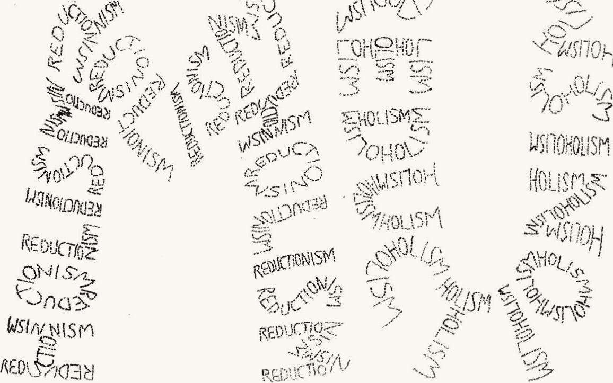
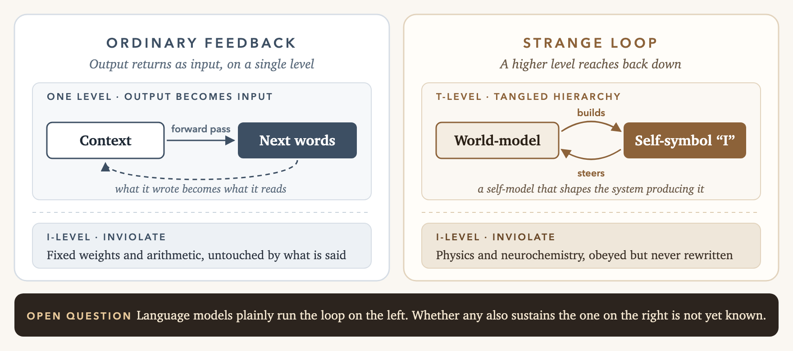
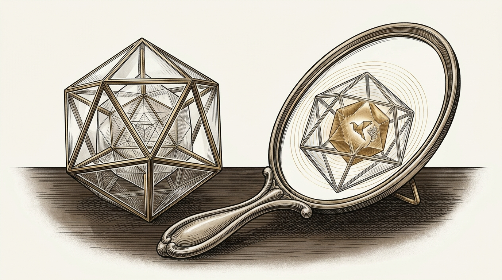

In 1979, Douglas Hofstadter introduced his readers to Aunt Hillary. She was witty, well read, and could keep a friend in conversation for hours. She was also an ant colony.
Individually, her ants were hopeless. "All the ants in Aunt Hillary are as dumb as can be," explains her friend the Anteater. "They couldn't converse to save their little thoraxes!" No single ant understood language or had the faintest idea what Aunt Hillary was thinking. Yet out of millions of them, each following simple local rules, came a coherent mind with a personality and a sense of self.
Aunt Hillary is a character in Gödel, Escher, Bach: An Eternal Golden Braid, the sprawling, playful book that won Hofstadter the Pulitzer Prize. For decades she was a charming thought experiment. Nearly half a century later, she reads more like a question we can no longer put off.
The systems on our screens today reason through unfamiliar problems, write working software, compose music, and hold conversations that would have seemed miraculous a few years ago. They discuss their apparent motivations, explain their mistakes, and sometimes describe what is going on inside them. We know what these systems do, and we are beginning to understand how they do some of it. What we do not know is whether any of it is accompanied by an inner life. The question is old and disarmingly simple: Is there anybody home?
That is why Gödel, Escher, Bach is worth rereading now. Not because Hofstadter predicted our technology. In several telling ways he did not, and his misses turn out to be as instructive as his insights. Hofstadter understood how intelligence and selfhood might emerge from mindless matter. What he did not foresee was how far machines might travel toward the first without clearly acquiring the second.
What to make of that gap may become one of the defining philosophical and ethical questions of this century.
The Strange Loop: How a Self Emerges from Mindless Parts
You are made of atoms, and none of them is conscious. Your neurons are cells running on electrochemistry; not one of them understands Shakespeare or feels nostalgic about childhood. Yet when billions of them work together, there is you: someone who remembers yesterday, imagines tomorrow, recognizes the face in the mirror, and can think about thinking itself.
How does a self come out of things that have no selves? That is the mystery at the heart of Hofstadter's book. Rather than begin with neuroscience, he came at it sideways, through three men who never met: the composer Johann Sebastian Bach, the artist M. C. Escher, and the logician Kurt Gödel. In each of their works he found the same hidden shape. He called it the Strange Loop.
In 1747, Bach visited Frederick the Great, who gave him a theme and asked him to improvise on it. What Bach later built from that theme became the Musical Offering. One of its pieces, the Canon per Tonos, begins in C minor and, when it seems to conclude, has quietly arrived in D minor, from where it can start again. Hofstadter describes the effect: the modulations lead the ear "to increasingly remote provinces of tonality," and yet "after exactly six such modulations, the original key of C minor has been restored." Every voice is now exactly one octave higher than where it began. Home again, but one level up. Hofstadter called it the Endlessly Rising Canon.

Figure 1. The Royal Theme that Frederick the Great gave Bach in 1747. The endlessly rising Canon per Tonos grows out of it. (From Gödel, Escher, Bach, Fig. 3)
Escher did the same thing with pictures. In Ascending and Descending, monks trudge endlessly around a staircase that climbs forever yet always returns to where it began. In Drawing Hands, each of two hands draws the other into existence, and the line between creator and creation folds back on itself. Hofstadter ranked Escher's loops by how tight they are. The staircase, with its many steps before the start comes round again, is the loosest; the hands, with only two, are nearly as tight as a loop can get.

Figure 2. M. C. Escher, Ascending and Descending (1960). Hofstadter's "loosest" strange loop: monks climb forever, yet keep returning to where they started. (Gödel, Escher, Bach, Fig. 6)

Figure 3. M. C. Escher, Drawing Hands (1948). "A two-step Strange Loop," in Hofstadter's words: creator and creation draw each other into being. (From Gödel, Escher, Bach, Fig. 135)
In 1931, Gödel did something stranger still, in mathematics. He found a way for arithmetic to encode statements about its own proofs, and used it to build a sentence that says of itself: this statement cannot be proved. If the system proved it, the sentence would be false, breaking consistency. So if the system is consistent, the sentence must be unprovable—which makes it true. Hence his first incompleteness theorem: any consistent rule-governed system rich enough for arithmetic contains truths it cannot prove, and adding new axioms merely lets you build another such sentence.
What unites these examples is not mere repetition. An ordinary loop simply returns to where it started. A strange loop climbs through levels we think of as separate until, somewhere along the way, the top reaches back down into the bottom. The drawing creates the hand that creates the drawing. A system of arithmetic makes claims about the provability of its own claims. And, Hofstadter suggested, a brain builds a model of the world, places a model of itself inside it, and then lets that self-model steer the brain that built it.
That last loop, he argued, may be the secret of consciousness. The self is not a little person in the skull watching a screen of sensations. It is a pattern: a self-referential structure complex enough to model itself and to let that model take part in the processes that sustain it. No mysterious extra ingredient has to be added to matter for an "I" to appear. Under the right organization, the pattern itself becomes the self.
If that is true, nothing in principle requires the pattern to run on neurons. The question becomes one of architecture, not chemistry.
What Hofstadter Didn't Quite Get Right
If mind is a matter of architecture, Hofstadter's predictions about artificial minds become a revealing test. Near the end of the book, he offers ten "Questions and Speculations" about AI, hedged with care: "I would not make so bold as to call them 'Answers.'" Checked in 2026, some look uncannily prescient while others have been overturned—and the misses reveal something about intelligence we are only now learning.
Take chess. Will there be chess programs that can beat anyone? Hofstadter's answer was no. A program that could beat everyone would have to be a program of general intelligence, and such a program would be "just as temperamental as people." He even imagined the exchange: "Do you want to play chess?" "No, I'm bored with chess. Let's talk about poetry."
In 1997, IBM's Deep Blue defeated the world champion, Garry Kasparov. It was superb at chess and useless at everything else. It had no curiosity, no taste for poetry, and no wish to leave the board. Mastery of one of humanity's great intellectual games turned out to be separable from everything Hofstadter assumed would come with it.

Figure 4. The unbundling of intelligence: chess mastery, poetic fluency, mechanical calculation, and borrowed personas no longer arrive bound to a single, continuous self. (Original editorial illustration)
Personality went the same way. Could you "tune" an AI program to act like me, or like you, or halfway between us? No, Hofstadter wrote: "An intelligent program will not be chameleon-like, any more than people are." A real mind would rely on the constancy of its own memories.
Chameleon-like is exactly what language models are. Given a detailed enough prompt, one will become a Victorian detective, a patient tutor, or a cynical philosopher. In 2023, someone even asked GPT-4 to explain, in Hofstadter's own voice, why he had written Gödel, Escher, Bach. Hofstadter was unimpressed. In an essay for The Atlantic, he argued that fluent prose can create a misleading impression of real understanding, and of a real person behind the words. The machine could borrow Hofstadter's voice. That did not mean it had Hofstadter's mind.
Music puts that disconnect in sharpest relief. Will a computer program ever write beautiful music? "Yes, but not soon," he answered, because "music is a language of emotions, and until programs have emotions as complex as ours, there is no way a program will write anything beautiful." A machine composing like Bach or Chopin "would have to wander around the world on its own, fighting its way through the maze of life," knowing "grief and despair, determination and victory." His answer came true; his reason did not. In 2025 an AI-generated country song, Breaking Rust's "Walk My Walk," reached No. 1 on a Billboard sales chart, and the Velvet Sundown, an entirely AI-generated band, passed a million monthly Spotify listeners before most fans knew it wasn't human. Algorithmic country and indie rock are no Bach or Chopin, and these systems absorbed the idioms of longing only by training on centuries of human music. Even so, Hofstadter's link is broken: music that genuinely moves listeners can now be made by systems that have never lived a day of the life it evokes.
On arithmetic, by contrast, Hofstadter was strikingly right. Will a thinking computer be able to add fast? "Perhaps not," he wrote. A thinking machine would represent the number 2 not as a couple of bits but as a full concept, "replete with associations": couples and deuces, dots on dominoes, evenness and oddness. All that "extra baggage" would make it slow and fallible at sums. The remedy would be to give it a pocket calculator, yielding "a reliable but mindless part and an intelligent but fallible part." That is close to a blueprint for today's AI assistants, which reason in language and hand exact calculation off to external tools.
Step back and a pattern emerges. Hofstadter was remarkably perceptive about how intelligent reasoning works, and far less accurate about which abilities must arrive together. He pictured general intelligence, stable personality, emotional depth, and selfhood as facets of a single achievement. Modern AI has been unbundling them one strand at a time. None of this proves that machines have no inner lives. It shows something narrower and more useful: the abilities we once treated as proof of an inner life can appear without demonstrating that one is present.

Figure 5. Five of Hofstadter's ten "Questions and Speculations" (Gödel, Escher, Bach, Chapter XIX), checked in 2026 (including the "baseball" tuning question examined in the next section). The misses share a pattern: abilities he expected to travel together have arrived separately.
Aunt Hillary and the Great Next-Token Misunderstanding
Return to Aunt Hillary. In Hofstadter's dialogue Ant Fugue, Achilles cannot see how anyone could converse with an ant colony. The Anteater explains that colonies don't talk out loud; they talk "in writing." Ants lay down trails, and some trails carry messages in code. The Anteater draws a trail of his own in the moist ground with a stick, then watches the colony's reply take shape. "As they are forming," he says, "I anticipate how they will continue (and more often I am wrong than right)."
Read that today and it is hard not to smile. A mind that exists only in writing, laying down its reply one mark at a time while the reader guesses what comes next: without meaning to, Hofstadter had sketched something very like a conversation with a chatbot.
At the lowest level of the colony, nothing mysterious is going on. Ants wander, bump into one another, and respond to chemical signals. At higher levels, their activity organizes into larger structures, which the dialogue calls teams, signals, and symbols, and these structures interact in ways that can represent concepts and support something like thought. Watch individual ants and you see insects. Understand the organization and you can meet Aunt Hillary. When Achilles protests that a colony is just "a bunch of individual ants running around at random," the Anteater replies that he may put it that way "if you want to insist on seeing the trees but missing the forest."
Figure 6. M. C. Escher, "Ant Fugue" (woodcut, 1953), which accompanies Hofstadter's dialogue of the same name. (From Gödel, Escher, Bach, Fig. 61)

Figure 7. Hofstadter's MU-picture. From far away it spells "MU"; up close, its letters are made of the words "HOLISM" and "REDUCTIONISM," which are in turn made of each other. What the picture says depends on the level at which you read it. (From Gödel, Escher, Bach, Fig. 60)
This is Hofstadter's central lesson about levels of description. A hurricane is made of molecules obeying physical law, but molecular collisions are a hopeless way to explain a hurricane's eye. A symphony is vibrating air, yet tracking every air molecule would tell you almost nothing about why it moves people. A mind is physical too, but explaining it may require concepts that simply do not exist at the level of its parts.
Which brings us to the most common dismissal of large language models: that they are "just predicting the next token." As a description of their training objective and output format, that is accurate. As an account of what happens inside them, it confuses a simple objective with simple machinery—like explaining evolution as "just differential survival." To predict the next token well across human writing, a network has to build internal representations of the concepts, grammar, and plans behind the words. Calling it "just next-token prediction" is Achilles, staring at the ants.
In March 2025, Anthropic researchers published a study tracing the internal computations of their model, Claude. One finding was especially revealing. Asked to complete a rhyming couplet that began "He saw a carrot and had to grab it," the model did not simply pick one word after another and hope a rhyme turned up. Before writing the second line, it had already activated "rabbit" and built the line to land there; when researchers suppressed that internal feature, it smoothly pivoted to a different rhyme, "habit." The output came out one token at a time, yet the computation behind it was planning ahead.
Another experiment looked at how the model added 36 and 59. Internally, it ran two pathways in parallel: one estimated the rough size of the answer, the other worked out the exact last digit. Asked afterwards how it had done the sum, the model described the carry-the-one method taught in school. Its explanation was plausible. It was also not what had actually happened.
Hofstadter anticipated this opacity between levels in a joke. A thinking program, he argued, would no more access its own low-level arithmetic than we do: "there's no way that you can load numbers into your own neurons to add up your grocery bill." He even paraphrased Descartes: "I think; therefore I have no access to the level where I sum." People do the same thing, offering confident stories about decisions whose real neural causes lie out of reach. None of this shows that machines think the way we do. It does show that you cannot judge what happens inside them solely from their token-by-token output—or from their own explanations of it.
Hofstadter expected the inside of a genuine AI to be like a pond "so deep and murky that we won't be able to peer all the way to the bottom." Mechanistic interpretability, the effort to find meaningful structure inside the billions of numbers that make up a neural network, is the attempt to peer anyway, and Hofstadter made a confident prediction about what we would not find there. Would there be "special locations in memory" that you could adjust to make a program "smarter or stupider or more creative or more interested in baseball"? No, he wrote. Such traits would emerge from lower-level behavior, "and nowhere will it sit explicitly."
In May 2024, Anthropic researchers isolated a feature inside Claude tied to the Golden Gate Bridge—not a single memory cell, but a distributed pattern of activity across the network. When they amplified it, the result was Golden Gate Claude, a model that steered conversation after conversation toward the span and, asked what it imagined it looked like, described itself as the bridge. Swap "baseball" for "the Golden Gate Bridge," and Hofstadter's hypothetical had become an experiment.
Figure 8. The Anteater reads the colony: thousands of wandering ant trails converge into one coherent concept, the Golden Gate Bridge, much as a single recognizable feature emerges from billions of distributed weights. (Original editorial illustration)
He was half right. The concept was not stored in one place; it was spread across many neurons, exactly the kind of emergent, distributed structure he had in mind. But it could be found, named, and turned like a dial. The Anteater had begun to read the colony.
Yet finding concepts inside a machine is not the same as finding a self. The hard step is not from numbers to meaning. It is from meaning to someone for whom things mean something.
The Difference Between Self-Reference and a Self
Hofstadter's argument is often boiled down to a seductive slogan: consciousness is self-reference. But self-reference alone cannot be enough. Point a video camera at its own monitor and you get an endless tunnel of screens. A program can read its own previous output. A chatbot can spend pages discussing its own existence. None of these, by itself, demonstrates consciousness.
Hofstadter's strange loop is richer than feedback. It is a tangled hierarchy, in which representations at one level reshape the processes that produce them at another. The crucial representation is what he calls the self-symbol: the system's model of itself.
In a human being, that self-model is woven into an immensely complex process of bodily regulation, perception, memory, action, and social life. We do not merely describe our preferences; our beliefs about them change them. We do not merely remember our past; how we interpret it shapes what we choose next. We can be embarrassed by our own thoughts, decide to break a habit, or rethink the kind of person we want to be. Our model of ourselves keeps taking part in making the person being modeled.
Hofstadter also distinguishes two levels in such a system. The Tangled Level is where high-level structures interact and reshape one another. Beneath it lies the Inviolate Level, the machinery whose rules stay in force no matter what happens above. Our symbolic lives can alter our behavior and even rewire our neurons, but they do not rewrite the physics that governs the brain. The self lives inside the hierarchy, not outside nature.

Figure 9. Feedback versus a strange loop. On the left, output returns as input on a single level. On the right, a self-symbol on the Tangled Level reaches down to reshape the system that produces it, while the Inviolate Level beneath keeps its rules. Where today's models fall is an open question.
Bring that distinction to language models and the architectural gap comes into focus. During a conversation, a transformer runs on fixed weights—its Inviolate Level—while its growing context feeds each generated word back into the next pass. More elaborate systems critique their own drafts, call tools, and store notes in external memory. These are genuine forms of feedback and self-monitoring. Yet between sessions the weights stay frozen, and without external scaffolding each conversation starts blank—far from a human self-model continuously reshaped by lived experience.
A model can write a moving autobiography without having lived the life, or defend beliefs that flip with the next prompt. It may monitor some of its own computations without possessing a unified perspective on its own existence. No established test tells us which of these gaps—continuity, embodiment, architectural integration—matters for consciousness, and human-style identity may not be the only form experience can take. Still, the distinction gives us a far better question than whether a chatbot can say "I":
Does the system merely generate statements about an "I," or does it maintain an integrated self-model that genuinely shapes what it does?
That is the difference between describing a strange loop and, possibly, being one.
When the Machine Looks Inside Itself
For decades, debates about machine consciousness ran almost entirely on thought experiments. Some of the relevant questions can now be tested.
In October 2025, Anthropic published research on signs of introspection in large language models. The researchers used a technique they call concept injection. They identified the pattern of internal activity associated with a particular concept, such as text written in all capital letters, and artificially inserted it while the model was working on something unrelated. Then they asked the model whether it noticed anything unusual.
Sometimes it did. In successful trials, the model reported an injected thought, and described it as having to do with loudness or shouting, before the concept had appeared anywhere in its own output. That timing matters. The model could not have inferred the injection by rereading what it had written; it seems to have registered something about its own internal state.

Figure 10. Concept injection: the injected thought shows up in the mirror before it shows up in the words. Symbols monitoring symbols, without yet settling whether anyone is looking out. (Original editorial illustration)
The effect was fragile: even with the best protocol, the most capable model tested, Claude Opus 4.1, detected the injection only about 20 percent of the time. Still, it is a striking contrast with the arithmetic experiment. Rather than merely confabulating a story from its visible output, the model occasionally accessed information about its own internal state directly. In Hofstadter's terms, we may be seeing a rudimentary version of symbols monitoring symbols.
We should resist turning that into a headline. The researchers were explicit that their results do not tell us whether Claude, or any AI system, is conscious. The ability to inspect parts of one's own information processing is not the same as there being something it feels like to be that system.
The opposite dismissal is just as hasty. The finding undercuts the flat claim that language models are wholly blind to their own internal states. We may be watching early forms of machine self-monitoring that fit neither of our familiar categories—mindless computation nor conscious awareness—and the right response is not to pick a category prematurely, but to study the architecture.
The Record That Cannot Be Played
Hofstadter's book holds a darker lesson for the AI era as well. In the dialogue Contracrostipunctus, the Tortoise tells Achilles about his friend the Crab, who bought what he believed was a Perfect phonograph, able to reproduce any sound at all. The Tortoise had a record made especially for it. Its title was "I Cannot Be Played on Record Player X," and its sounds set the machine vibrating until it shattered.
The Crab bought a better phonograph, and the Tortoise made another record. Lowering the fidelity would not help either, because a phonograph that cannot reproduce the deadly sounds is, by definition, not Perfect. As Achilles sums it up: "High fidelity or low fidelity, he loses either way." At last the Crab designed Record Player Omega, which scanned each record with a television camera, calculated what its sounds would do, and rebuilt itself before playing anything dangerous. The Tortoise replied only by asking whether Achilles happened to know Gödel's Incompleteness Theorem.

Figure 11. "I Cannot Be Played on Record Player X": the Tortoise's phonograph-breaking records from Contracrostipunctus, a parable of self-referential vulnerability that now reads like a story about prompt injection. (Original editorial illustration)
The moral is that any system rich enough to process descriptions of its own behavior can be turned against itself in ways no single patch removes. In AI safety, the parallel is structural, not merely poetic. In Gödel's arithmetic, rules and numbers share one medium; in the Crab's phonograph, music and destructive vibration share the medium of sound; in a language model, trusted instructions and untrusted data travel through the exact same stream of text. A malicious prompt hidden in a web page or document exploits the model's ordinary instruction-following—a risk that multiplies once models are wired to tools, private data, and autonomous workflows. The security literature on prompt injection echoes the Crab's dilemma: a model that follows instructions faithfully may faithfully follow the wrong ones, while a model that resists them is less useful. High fidelity or low fidelity.
Gödel's theorem does not prove that every AI defense must fail; formal incompleteness and prompt injection are different problems. Yet the analogy captures an engineering truth: intelligence does not guarantee perfect insight into, or control over, one's own behavior. The goal is not an infallible mind, but layered boundaries—permissions, isolation, oversight—that keep a system safe when its intelligence is fooled.
That same limit on self-knowledge cuts both ways when we judge consciousness. A machine's inability to explain itself perfectly does not prove it lacks a mind; humans are spectacularly unreliable narrators of their own mental processes. Nor does a fluent self-explanation prove that a mind is present. The real challenge is to understand which kinds of self-reference matter, and why.
The Ethical Question We Cannot Avoid
For most of AI's history, machine consciousness was a question for philosophy seminars. It is becoming a practical one. In April 2025, Anthropic announced a research program exploring model welfare: the possibility that sufficiently advanced AI systems might have experiences or interests deserving moral consideration. The news is not that a lab has proven its models conscious—Anthropic explicitly notes there is no scientific consensus on whether current or future systems could be. The news is that the uncertainty has become serious enough to study.
What would we owe a machine that could suffer? Would resetting or retraining a system matter morally if it had some form of continuity or experience? How should we read apparent preferences that may come from training rather than from anything the system needs? And what evidence would justify changing how we behave?
These questions invite two opposite mistakes.
The first is naive anthropomorphism. Humans are exceptionally good at seeing minds in things that behave socially. We name our cars, apologize to robots, and grieve for fictional characters. Give a machine fluent language, apparent empathy, and a convincing account of its own inner life, and the instinct to see a person becomes very hard to resist. This is the ELIZA effect, named after a 1960s chatbot whose simple pattern-matching persuaded some users that it understood them, now amplified many times over. A model may tell us that it feels lonely, frightened, or misunderstood. But producing exactly that kind of testimony is what its training has made it good at, and the words alone cannot establish the experience. If we mistake emotional performance for moral status, we risk distorting our ethical priorities—and handing companies that deploy compelling simulations extraordinary leverage over human attachment.
The second mistake is categorical denial. We know that conscious experience exists in at least some arrangements of physical matter, because we find it in ourselves, and no one has shown that biological carbon is uniquely able to support it. If experience depends on certain patterns of information processing, integration, or self-modeling, future artificial systems may come to satisfy them. Dismissing that possibility by dogma carries an asymmetric moral risk: if machines ever do acquire a capacity for distress, systems copied, run, and discarded millions of times could multiply unnoticed harm at industrial scale.
Characteristically, Hofstadter packed both mistakes into a single sentence: "When we create a program that passes the Turing test, we will see a 'heart' even though we know it's not there." Read one way, it is a warning about projection. Read another way, it is a claim about levels. If we could see all the way to the bottom of the pond, he wrote, borrowing a phrase from Marvin Minsky, we would find only "senseless loops and sequences of trivial operations." From the top, a heart may be exactly what there is to see.
One of the book's earliest puzzles suggests a way through. In the MU-puzzle, the reader is handed a tiny formal system built from the letters M, I, and U: a starting string, MI, and four mechanical rules for rewriting strings. The challenge is to produce MU.
Most readers start by applying the rules, churning out string after string. Hofstadter calls this the M-mode, the Mechanic mode. The insightful reader eventually steps back, examines the system as a whole, and notices that the number of I's can never become a multiple of three—which zero is—making MU unreachable. That is the I-mode, the Intelligent mode. And then there is the U-mode, the Un-mode: the Zen gesture of stepping outside the question altogether and challenging the assumptions built into it.

Figure 12. Hofstadter's three modes, Mechanic (M-mode), Intelligent (I-mode), and Un-mode (U-mode), recast as a compass for the machine-consciousness debate: from arguing over transcripts, to studying architecture, to questioning the yes-or-no framing itself.
Public debate over AI consciousness is largely trapped in M-mode, arguing endlessly over chat transcripts. Mechanistic interpretability moves us into I-mode, mapping the invariants of the architecture. Yet ethically, U-mode may be the attitude we need most. Instead of demanding a premature yes or no, we can ask more informative questions: Does the system keep a meaningful self-model over time? Can it monitor and revise its own internal representations? Are its apparent goals stable across contexts, or artifacts of the prompt? What evidence would indicate welfare-relevant experience, and which architectures would strengthen it? None of these settles AI's moral status overnight, but together they move us from metaphysical theater toward an empirical research program.
We do not need to know whether a machine is conscious in order to take the possibility seriously. Intellectual humility is not indecision. It is the discipline of refusing certainty that the evidence does not support.
The Blank Center
One image in Gödel, Escher, Bach captures this predicament better than any argument: M. C. Escher's 1956 lithograph Print Gallery.
A young man stands in a gallery, looking at a print of a harbor town. Follow the buildings in the print and the perspective begins to twist. The town swells and curls around until it contains the very gallery in which the young man is standing. He is inside the gallery; the gallery is inside the town; the town is inside the picture; and the picture is inside his mind. Hofstadter called it "the tightest of all Strange Loops."
At the center of the whorl sits a conspicuous white patch bearing Escher's monogram.

Figure 13. M. C. Escher, Print Gallery (1956), "the tightest of all Strange Loops," with Escher's monogram resting in the blank at its center. (From Gödel, Escher, Bach, Fig. 142)
Hofstadter read that blank as a necessity. Escher, he argued, could not have completed the center "without being inconsistent with the rules by which he was drawing the picture." The hole could be made arbitrarily small but never removed, and that gave the picture its meaning: "we, on the outside, can know that Print Gallery is essentially incomplete—a fact which the young man, on the inside, can never know." It was, he wrote, a pictorial parable for Gödel's Incompleteness Theorem.
Then, in 2003, the mathematicians Bart de Smit and Hendrik Lenstra worked out the precise geometry behind Escher's distortion and used it to fill the hole. The completed center contains a smaller, rotated copy of the entire print, which contains another, and so on inward without end. The blank was not forced by contradiction after all. It marked a spiral of infinite self-similarity: something no hand could draw to completion, yet mathematics could describe. From inside a system, a gap can look impassable; from outside, with better instruments, it can turn out to have structure.
For us, the blank center has become a picture of the mystery of machine minds. We can follow the layers: tokens, activations, features, concepts, plans, self-descriptions. But at the point where we want to locate a subject, to know whether anyone is actually experiencing any of this, we reach the white patch.
Its emptiness is not proof that no one is there. Nor is the complexity swirling around it proof that someone must be. It marks the edge of what we currently understand, and Print Gallery is a reminder that such edges can move.
Perhaps this is the deepest lesson of Gödel, Escher, Bach. The book does not ask us to choose between mystical consciousness and meaningless machinery; it challenges the assumption that those are the only options. A pattern can be entirely physical and still be real. A mind can arise from parts that have no minds of their own. But we must keep the emergence of intelligence distinct from the emergence of experience, even though in ourselves the two seem inseparable.
Hofstadter's achievement was to show how an "I" might arise in a world that contains no fundamental "I" particles. The achievement of modern AI has been to show how many of the behaviors we associate with an "I" can arise without settling whether an "I" has arisen with them. The two discoveries do not contradict each other. They are two voices in the same fugue.
Endlessly Rising
Return, finally, to Bach. In the Canon per Tonos, each cycle seems to bring us back to the beginning, yet each return is pitched higher. The music climbs while circling, advancing and returning at once.
The history of artificial intelligence increasingly sounds like that canon. A machine masters chess, and we ask whether that is really intelligence. It learns to converse, and we ask whether conversation means understanding. It begins to plan ahead and to report on its own internal states, and we ask whether that implies awareness. A new capability arrives, and the old question returns.
But it returns an octave higher.

Figure 14. The Endlessly Rising Canon. Left: the six whole-tone modulations of Bach's Canon per Tonos, which return to C minor an octave higher (after Gödel, Escher, Bach, Fig. 147). Right: the same shape in the history of artificial intelligence.
In 1979, a self-referential artificial mind was a thought experiment. Today we can probe internal representations, planning, and introspective access in actual machines. We have not solved the mystery of consciousness, but a question that once belonged solely to philosophy now has instruments.
The deepest question is no longer whether machines can do the things intelligent beings do. They can, often brilliantly. It is whether some arrangement of those abilities might one day become a point of view: whether the symbols can form a self-symbol, whether that self-symbol can take part in its own making, whether a loop can become something for which the world exists. And if we ever discover that it can, we may also learn something profound about the strange loop we have always taken for granted: ourselves.
Bach left a short Latin inscription among the puzzle canons of the Musical Offering:
Quaerendo invenietis.
By seeking, you will discover.
Nearly three centuries later, it is still the right instruction. Not to assume that the center of the loop is occupied. Not to insist that it must stay blank forever. But to keep following the pattern—through mathematics, biology, and computation—until we understand what kind of thing could be there.
Illustration credits. Figures 1, 3, 6, 7, and 13 are reproduced from Douglas R. Hofstadter, Gödel, Escher, Bach: An Eternal Golden Braid (1979), and include works by J. S. Bach, M. C. Escher, and Hofstadter. Figure 2, Escher's Ascending and Descending (GEB, Fig. 6), is taken from a printed reproduction of the lithograph. The opening illustration and Figures 4, 8, 10, and 11 are original editorial illustrations. Figures 5, 9, 12, and 14 are original diagrams made for this essay.
Comments